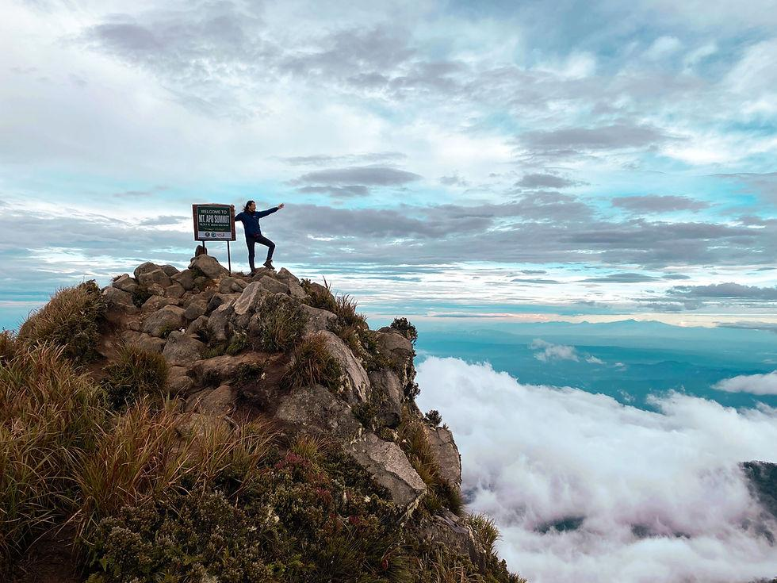
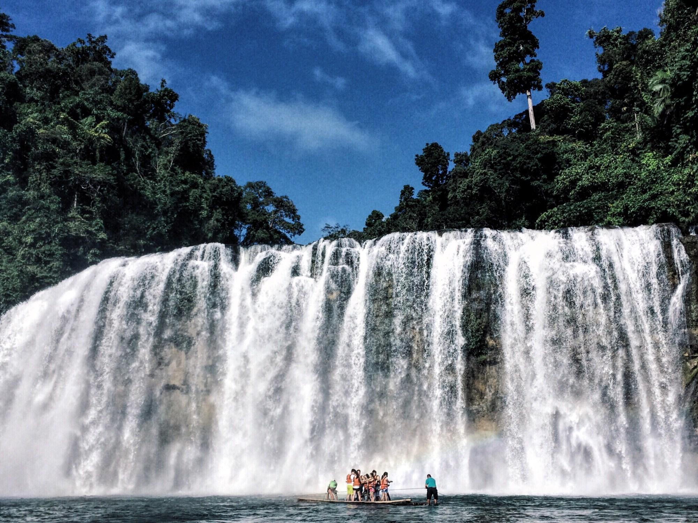
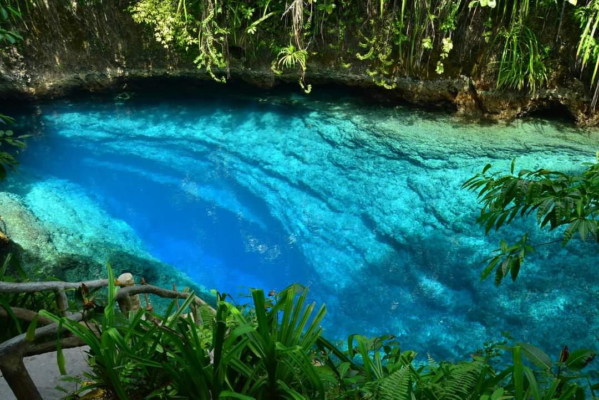

Tourist Spots



Mindanao has many natural attractions that showcase its mountains, waterfalls, lakes, and rivers.
Recommended tourist spots:
- Mount Apo (Davao Region) - The highest mountain in the Philippines, popular among mountain climbers.
- Tinuy-an Falls (Surigao del Sur) - A wide and beautiful waterfall often called the "Little Niagara of the Philippines."
- Enchanted River (Hinatuan, Surigao del Sur) - Famous for its deep blue water and scenic surroundings.
- Lake Sebu (South Cotabato) - Known for its beautiful lake, waterfalls, and T'boli cultural heritage.
- Maria Cristina Falls (Iligan City) - A famous waterfall that also provides hydroelectric power.
- White Island (Camiguin) - A beautiful white-sandbar attraction surrounded by clear seawater.